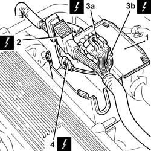
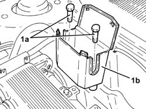
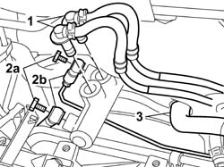
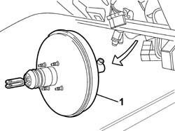

3330D03 brake servo/pump assembly - r r for right-hand drive versions
- Path
- Procedures > 33 BRAKING SYSTEM > 3330 HYDRAULIC BRAKING SYSTEM > 3330D brake vacuum system > 3330D03 brake servo/pump assembly - r r for right-hand drive versions
- Kind
- repair procedure (removal / refitting; the operation number is the code)
- Applies to
- engines: 3.2 V6; all production periods
- Interactive page
- https://sloeber94.github.io/elrnDB-a156/en/#/3238075
Applies to: engines: 3.2 V6; all production periods
 Removing
Removing
 Refitting
RefittingEnsure that the ignition key is in the OFF position, then disconnect the negative battery terminal (-).
 | Name | Connector |
|---|---|---|
- | Battery |
1008C10 power unit upper reaction link r r
1. Open the electrical connections box cover.
2. Disconnect the engine coupling.
3. Disconnect the electrical connections (3a) and (3b) for the rear Lambda sensors and the catalytic converter.
| Name | Connector |
|---|---|---|
3a | Lambda sensor on catalyzer |
| Name | Connector |
|---|---|---|
3b | Lambda sensor on catalyzer -2 |
4. Disconnect the electrical connection for the detonation sensor, timing side.
| Name | Connector |
|---|---|---|
4 | Detonation sensor - 1 |

Applies to: engines: 3.2 V6; all production periods
1. Undo the bolts (1a) and remove the connections box (1b).

Applies to: engines: 3.2 V6; all production periods
Drain the brake-clutch fluid from the reservoir using a suitable syringe.
1. Disconnect the hoses from the brake fluid reservoir to the master cylinder, master cylinder side.
2. Undo connectors (2a) and disconnect the rigid brake pipes (2b) from master cylinder to ABS control unit, master cylinder side.
3. Disconnec the vacuum pipe from the brake servo.

Applies to: engines: 3.2 V6; all production periods
4110A11 steering wheel - r+r for replacement or check for versions with air bag
7040A26 steering column trim - r+r
5550A12 complete stalk unit - r+r for versions with air bag
5520A12 ignition switch assembly - r r for versions with air bag
4110A30 Steering control shaft SUPPORT - R.R.
5505A10 electrical junction unit - r+r
1068A20 accelerator pedal with built-in potentiometer - r r
3330B27 clutch pedal - r r for rhd versions
3330B23 brake pedal - r r for rhd versions
3330B42 pedal unit mount - r rfor right hand drive versions
1. Remove the brake servo complete with master cylinder from the passenger compartment.

Applies to: engines: 3.2 V6; all production periods
Refitting
RemovingPosition the brake servo with master cylinder. Fit the gasket on the accumulator over the hole in the bulkhead between passenger compartment and engine bay.
Connect the connectors of the rigid brake pipes connected to the ABS control unit to the master cylinder without tightening to torque.
Connect the brake hoses leading to the tank to the master cylinder.
Connect the vacuum pipe to the brake servo.
3330B42 pedal unit mount - r rfor right hand drive versions
3330B23 brake pedal - r r for rhd versions
3330B27 clutch pedal - r r for rhd versions
1068A20 accelerator pedal with built-in potentiometer - r r
Position the mount with bonnet lid opening lever and bolt in place.
Position the underfacia relay carrier bracket and bolt in place.
Position the driver's side foot rest and bolt in place.
5505A10 electrical junction unit - r+r
4110A30 Steering control shaft SUPPORT - R.R.
5520A12 ignition switch assembly - r r for versions with air bag
5550A12 complete stalk unit - r+r for versions with air bag
7040A26 steering column trim - r+r
4110A11 steering wheel - r+r for replacement or check for versions with air bag
Tighten the rigid brake pipe connectors previously screwed in loosely to the master cylinder.
 | Fastening | Component | Ø | Value (daNm) |
|---|---|---|---|---|
- | Bolt | PIPE FROM PUMP TO HYDRAULIC CONTROL UNIT | - | (On master cylinder) 1.8 |
Position the connector carrier box and bolt in place.
Connect the electrical connection for the detonation sensor, timing side.
| Name | Connector |
|---|---|---|
- | Detonation sensor - 1 |
Connect the electrical connections for the rear Lambda sensors to the catalytic converter.
| Name | Connector |
|---|---|---|
- | Lambda sensor on catalyzer |
| Name | Connector |
|---|---|---|
- | Lambda sensor on catalyzer -2 |
Connect the engine junction.
Close the connection box cover.
1008C10 power unit upper reaction link r r .
- 0010T64 brake and or clutch fluid check level and top up as necessary
0010T65 hydraulic brake system bleed air
Connect the negative (-) battery terminal.
Topics linked from this page (18)
- 0010T65 hydraulic brake system bleed air
- 1008C10 power unit upper reaction link r r
- 1068A20 accelerator pedal with built-in potentiometer - r r
- 3330B23 brake pedal - r r for rhd versions
- 3330B27 clutch pedal - r r for rhd versions
- 3330B42 pedal unit mount - r rfor right hand drive versions
- 4110A11 steering wheel - r+r for replacement or check for versions with air bag
- 4110A30 Steering control shaft SUPPORT - R.R.
- 5505A10 electrical junction unit - r+r
- 5520A12 ignition switch assembly - r r for versions with air bag
- 5550A12 complete stalk unit - r+r for versions with air bag
- 5580C18 air bag module - r+r
- 7040A26 steering column trim - r+r
- 7040A37 fuse box cover - r r
- A1B Battery ( BATTERY NEGATIVE )
- K17 Lambda sensor on catalyzer
- K18 Lambda sensor on catalyzer -2
- K50 Detonation sensor - 1